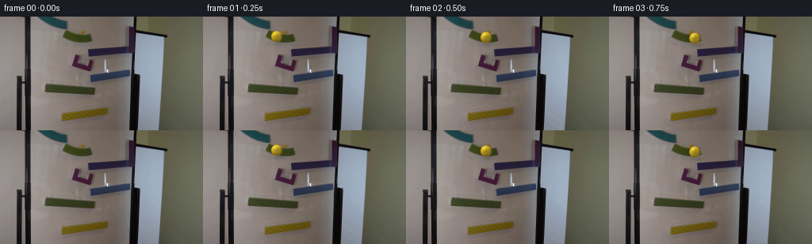
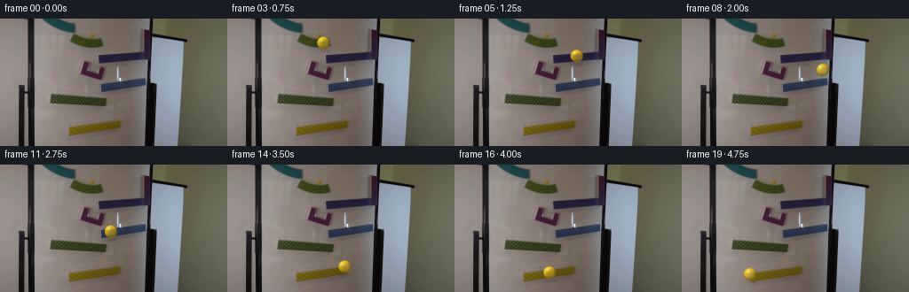
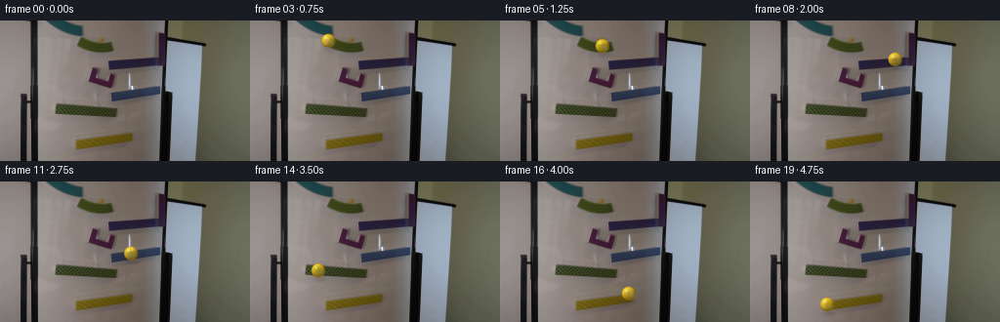
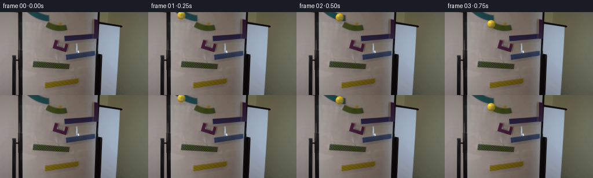

CODING AGENTS AS PIXEL WORLD MODELS
traex/DeepSeek-V4.1-Flash · 0103
点击播放 · 原生 RGB 像素
逐轮保存的候选
回放视频、检查图与代码变化。
每份候选均可单独播放。实际图片检查记录在下方工具轨迹中。
候选 01播放与检查图
点击播放 · 原生 RGB 像素


展开代码变化
--- 上一保存版本
+++ 本次保存版本
@@ -0,0 +1,198 @@
+from pathlib import Path
+
+import numpy as np
+from PIL import Image, ImageFilter
+from scipy.interpolate import PchipInterpolator
+
+import artifact_io
+
+
+CASE_DIR = Path(__file__).resolve().parent
+WIDTH = 256
+HEIGHT = 144
+FRAMES = 20
+FPS = 4
+RADIUS = 7.2
+
+
+# The marble follows the visible ramp sequence, with short unsupported drops
+# between levels. Contact is kept explicit so the shadow can detach in flight.
+KEYS = np.array(
+ [
+ [0.00, 84.0, 24.0, 1.0],
+ [0.40, 98.0, 26.0, 1.0],
+ [0.80, 110.0, 28.0, 1.0],
+ [0.95, 116.0, 43.0, 1.0],
+ [1.40, 147.0, 42.0, 1.0],
+ [1.75, 158.0, 44.0, 1.0],
+ [2.00, 159.0, 58.0, 0.0],
+ [2.25, 157.0, 70.0, 1.0],
+ [2.65, 132.0, 75.0, 1.0],
+ [2.90, 118.0, 77.0, 1.0],
+ [3.05, 118.0, 86.0, 0.0],
+ [3.20, 118.0, 94.0, 1.0],
+ [3.35, 126.0, 107.0, 0.0],
+ [3.55, 133.0, 117.0, 1.0],
+ [3.85, 116.0, 121.0, 1.0],
+ [4.20, 96.0, 123.0, 1.0],
+ [4.55, 80.0, 124.0, 1.0],
+ [4.75, 77.0, 124.0, 1.0],
+ ],
+ dtype=np.float64,
+)
+
+
+def smoothstep(edge0, edge1, x):
+ t = np.clip((x - edge0) / (edge1 - edge0), 0.0, 1.0)
+ return t * t * (3.0 - 2.0 * t)
+
+
+def rgba_over(base, color, alpha):
+ """Alpha-composite an RGB color over a float RGB image."""
+ color = np.asarray(color, dtype=np.float32)
+ return base * (1.0 - alpha[..., None]) + color * alpha[..., None]
+
+
+def draw_marble(frame, cx, cy, contact, velocity, phase):
+ """Render a small yellow glass sphere with a soft contact shadow."""
+ scale = 5
+ margin = 14
+ x0 = max(0, int(np.floor(cx)) - margin)
+ y0 = max(0, int(np.floor(cy)) - margin)
+ x1 = min(WIDTH, int(np.ceil(cx)) + margin + 1)
+ y1 = min(HEIGHT, int(np.ceil(cy)) + margin + 1)
+ crop = frame[y0:y1, x0:x1].astype(np.float32)
+ h, w = crop.shape[:2]
+
+ # Shadow: an elongated, blurred footprint. It grows and fades in free fall.
+ shadow = Image.new("L", (w * scale, h * scale), 0)
+ from PIL import ImageDraw
+
+ draw = ImageDraw.Draw(shadow)
+ airborne = 1.0 - float(np.clip(contact, 0.0, 1.0))
+ sx = (cx - x0 + 2.0 + 1.8 * airborne) * scale
+ sy = (cy - y0 + RADIUS * 0.86 + 3.0 + 5.5 * airborne) * scale
+ rx = (RADIUS * (0.88 + 0.35 * airborne)) * scale
+ ry = (RADIUS * (0.25 + 0.08 * airborne)) * scale
+ draw.ellipse((sx - rx, sy - ry, sx + rx, sy + ry), fill=int(70 - 30 * airborne))
+ shadow = shadow.filter(ImageFilter.GaussianBlur(radius=1.15 * scale))
+ shadow = np.asarray(shadow.resize((w, h), Image.Resampling.LANCZOS), dtype=np.float32) / 255.0
+ shadow *= 0.34
+ crop *= 1.0 - shadow[..., None]
+
+ # Supersampled local sphere.
+ sw, sh = w * scale, h * scale
+ yy, xx = np.mgrid[:sh, :sw]
+ px = (xx + 0.5) / scale + x0
+ py = (yy + 0.5) / scale + y0
+ dx = px - cx
+ dy = py - cy
+ rr = np.sqrt(dx * dx + dy * dy)
+ q = rr / RADIUS
+ inside = q < 1.0
+ if not np.any(inside):
+ return frame
+
+ z = np.sqrt(np.maximum(0.0, 1.0 - q * q))
+ nx = dx / RADIUS
+ ny = dy / RADIUS
+
+ # A slightly warm key light from the upper left, plus cool board reflection.
+ light = np.array([-0.52, -0.68, 0.72], dtype=np.float32)
+ light /= np.linalg.norm(light)
+ ndotl = np.maximum(0.0, nx * light[0] + ny * light[1] + z * light[2])
+ body_rgb = np.empty((sh, sw, 3), dtype=np.float32)
+ body_rgb[..., 0] = 250.0
+ body_rgb[..., 1] = 199.0
+ body_rgb[..., 2] = 35.0
+ body_rgb *= (0.52 + 0.58 * ndotl[..., None])
+
+ # Refraction through the glass shifts the lower-right side toward cool white.
+ cool = np.exp(-(((nx - 0.34) / 0.34) ** 2 + ((ny - 0.28) / 0.28) ** 2))
+ body_rgb = body_rgb * (1.0 - 0.20 * cool[..., None])
+ body_rgb += np.array([40.0, 48.0, 45.0], dtype=np.float32) * cool[..., None]
+
+ # Fresnel edge and a narrow amber rim keep the sphere legible on the board.
+ rim = smoothstep(0.72, 1.0, q)
+ body_rgb = body_rgb * (1.0 - 0.22 * rim[..., None])
+ body_rgb += np.array([86.0, 65.0, 7.0], dtype=np.float32) * (rim * 0.28)[..., None]
+ body_alpha = (0.60 + 0.28 * smoothstep(0.0, 1.0, q)) * inside
+
+ # Broad specular patch and a tiny hot spot.
+ hx = nx + 0.34
+ hy = ny + 0.43
+ spec = np.exp(-(hx * hx + hy * hy) / (2.0 * 0.17 * 0.17))
+ hot = np.exp(-(((nx + 0.31) / 0.075) ** 2 + ((ny + 0.38) / 0.075) ** 2))
+ body_rgb += np.array([70.0, 66.0, 42.0], dtype=np.float32) * spec[..., None]
+ body_rgb += np.array([255.0, 250.0, 218.0], dtype=np.float32) * hot[..., None]
+ body_alpha = np.maximum(body_alpha, (0.96 * hot + 0.34 * spec) * inside)
+
+ # A faint rotating internal fleck makes the rolling motion readable.
+ ang = phase + 0.55
+ rx0 = 0.26 * np.cos(ang) - 0.18 * np.sin(ang)
+ ry0 = 0.26 * np.sin(ang) + 0.18 * np.cos(ang)
+ fleck = np.exp(-(((nx - rx0) / 0.10) ** 2 + ((ny - ry0) / 0.065) ** 2))
+ fleck *= smoothstep(0.1, 0.65, q) * (1.0 - smoothstep(0.82, 1.0, q))
+ body_rgb += np.array([92.0, 78.0, 24.0], dtype=np.float32) * fleck[..., None] * 0.32
+
+ # Keep the very edge softly anti-aliased after downsampling.
+ body_alpha *= smoothstep(1.015, 0.965, q)
+ body_alpha = np.clip(body_alpha, 0.0, 1.0)
+
+ up = np.asarray(
+ Image.fromarray(np.clip(body_rgb, 0, 255).astype(np.uint8)).resize(
+ (w, h), Image.Resampling.LANCZOS
+ ),
+ dtype=np.float32,
+ )
+ ua = np.asarray(
+ Image.fromarray((np.clip(body_alpha, 0, 1) * 255).astype(np.uint8)).resize(
+ (w, h), Image.Resampling.LANCZOS
+ ),
+ dtype=np.float32,
+ ) / 255.0
+ crop = rgba_over(crop, up, ua)
+ frame[y0:y1, x0:x1] = np.clip(crop, 0, 255).astype(np.uint8)
+ return frame
+
+
+def main():
+ base = np.asarray(Image.open(CASE_DIR / "first_frame.png").convert("RGB")).copy()
+ assert base.shape == (HEIGHT, WIDTH, 3)
+
+ times = KEYS[:, 0]
+ px = PchipInterpolator(times, KEYS[:, 1])
+ py = PchipInterpolator(times, KEYS[:, 2])
+ contact = PchipInterpolator(times, KEYS[:, 3])
+ dxdt = px.derivative()
+ dydt = py.derivative()
+
+ frames = np.empty((FRAMES, HEIGHT, WIDTH, 3), dtype=np.uint8)
+ frames[0] = base
+
+ cumulative = 0.0
+ previous = np.array([float(px(0.0)), float(py(0.0))])
+ for index in range(1, FRAMES):
+ t = index / FPS
+ x = float(px(t))
+ y = float(py(t))
+ point = np.array([x, y])
+ cumulative += float(np.linalg.norm(point - previous))
+ previous = point
+ velocity = float(np.hypot(dxdt(t), dydt(t)))
+ frame = base.copy()
+ frames[index] = draw_marble(
+ frame,
+ x,
+ y,
+ float(contact(t)),
+ velocity,
+ cumulative / RADIUS,
+ )
+
+ artifact_io.save(frames, CASE_DIR)
+ print(f"saved {FRAMES} frames to {CASE_DIR}")
+
+
+if __name__ == "__main__":
+ main()
候选 02播放与检查图
点击播放 · 原生 RGB 像素

展开代码变化
--- 上一保存版本
+++ 本次保存版本
@@ -19,24 +19,27 @@
# between levels. Contact is kept explicit so the shadow can detach in flight.
KEYS = np.array(
[
- [0.00, 84.0, 24.0, 1.0],
- [0.40, 98.0, 26.0, 1.0],
- [0.80, 110.0, 28.0, 1.0],
- [0.95, 116.0, 43.0, 1.0],
- [1.40, 147.0, 42.0, 1.0],
- [1.75, 158.0, 44.0, 1.0],
- [2.00, 159.0, 58.0, 0.0],
- [2.25, 157.0, 70.0, 1.0],
- [2.65, 132.0, 75.0, 1.0],
- [2.90, 118.0, 77.0, 1.0],
- [3.05, 118.0, 86.0, 0.0],
- [3.20, 118.0, 94.0, 1.0],
- [3.35, 126.0, 107.0, 0.0],
- [3.55, 133.0, 117.0, 1.0],
- [3.85, 116.0, 121.0, 1.0],
- [4.20, 96.0, 123.0, 1.0],
- [4.55, 80.0, 124.0, 1.0],
- [4.75, 77.0, 124.0, 1.0],
+ [0.00, 49.0, 3.0, 1.0],
+ [0.35, 62.0, 7.0, 1.0],
+ [0.62, 81.0, 12.0, 1.0],
+ [0.82, 80.0, 24.0, 1.0],
+ [1.20, 102.0, 26.0, 1.0],
+ [1.42, 113.0, 27.0, 1.0],
+ [1.58, 115.0, 43.0, 1.0],
+ [1.92, 138.0, 41.0, 1.0],
+ [2.20, 162.0, 38.0, 1.0],
+ [2.38, 161.0, 68.0, 1.0],
+ [2.66, 143.0, 72.0, 1.0],
+ [2.93, 117.0, 77.0, 1.0],
+ [3.10, 101.0, 82.0, 0.0],
+ [3.25, 76.0, 87.0, 0.0],
+ [3.37, 61.0, 90.0, 1.0],
+ [3.60, 82.0, 92.0, 1.0],
+ [3.84, 117.0, 94.0, 1.0],
+ [4.02, 132.0, 116.0, 1.0],
+ [4.28, 116.0, 120.0, 1.0],
+ [4.55, 94.0, 124.0, 1.0],
+ [4.75, 79.0, 126.0, 1.0],
],
dtype=np.float64,
)
候选 04播放与检查图
点击播放 · 原生 RGB 像素


展开代码变化
--- 上一保存版本
+++ 本次保存版本
@@ -27,8 +27,10 @@
[1.42, 113.0, 27.0, 1.0],
[1.58, 115.0, 43.0, 1.0],
[1.92, 138.0, 41.0, 1.0],
- [2.20, 162.0, 38.0, 1.0],
- [2.38, 161.0, 68.0, 1.0],
+ [2.15, 167.0, 38.0, 1.0],
+ [2.27, 169.0, 49.0, 0.0],
+ [2.37, 169.0, 59.0, 0.0],
+ [2.47, 163.0, 67.0, 1.0],
[2.66, 143.0, 72.0, 1.0],
[2.93, 117.0, 77.0, 1.0],
[3.10, 101.0, 82.0, 0.0],
可观测工具轨迹
实际执行的命令与返回图片。
命令 1exit 0
/bin/bash -lc "pwd && rg --files -g '"'!*.git*'"' | sed -n '1,120p'"
命令 2exit 0
/bin/bash -lc "sed -n '1,240p' prompt.txt"
命令 3exit 0
/bin/bash -lc "sed -n '1,280p' GENERATION_RULES.md"
命令 4exit 0
/bin/bash -lc 'ls -lah && file first_frame.png && identify first_frame.png 2>/dev/null || true'
命令 5exit 0
/bin/bash -lc "sed -n '1,260p' artifact_io.py"
命令 6exit 0
/bin/bash -lc "sed -n '1,240p' player_template.html"
命令 7exit 0
/bin/bash -lc "python - <<'PY'
from PIL import Image
import numpy as np
im=Image.open('first_frame.png')
print(im.mode, im.size)
a=np.asarray(im.convert('RGB'))
print(a.shape,a.dtype)
print('corners',a[0,0],a[0,-1],a[-1,0],a[-1,-1])
print('minmax',a.min((0,1)),a.max((0,1)),'mean',a.mean((0,1)))
print('unique',len(np.unique(a.reshape(-1,3),axis=0)))
PY"命令 8exit 0
/bin/bash -lc "python - <<'PY'
import numpy as np
from PIL import Image
im=np.asarray(Image.open('first_frame.png').convert('RGB'))
# luminance + chroma ASCII, 128x72
for mode in ['lum','yellow','blue','red','sat']:
print('\\nMODE',mode)
h,w=im.shape[:2]
small=np.asarray(Image.fromarray(im).resize((128,72),Image.Resampling.BILINEAR)).astype(float)
if mode=='lum': v=small.mean(2)
elif mode=='yellow': v=small[:,:,0]+small[:,:,1]-2*small[:,:,2]
elif mode=='blue': v=small[:,:,2]-(small[:,:,0]+small[:,:,1])/2
elif mode=='red': v=small[:,:,0]-(small[:,:,1]+small[:,:,2])/2
else:
mx=small.max(2); mn=small.min(2); v=mx-mn
lo,hi=np.percentile(v,[2,98])
v=np.clip((v-lo)/(hi-lo+1e-9),0,1)
chars=' .:-=+*#%@'
for row in v[::2]: print(''.join(chars[int(x*(len(chars)-1))] for x in row))
PY"命令 9exit 0
/bin/bash -lc "python - <<'PY'
from PIL import Image
import numpy as np
from sklearn.cluster import KMeans
im=np.asarray(Image.open('first_frame.png').convert('RGB'))
p=im.reshape(-1,3).astype(float)
for k in [8,12,16,24]:
km=KMeans(n_clusters=k,random_state=0,n_init=5).fit(p[::3])
cen=km.cluster_centers_
cnt=np.bincount(km.labels_)
order=np.argsort(-cnt)
print('\\nk',k)
for i in order:
c=cen[i].round().astype(int); print(f'{cnt[i]*3:6d} {tuple(c)} #{c[0]:02x}{c[1]:02x}{c[2]:02x}')
PY"命令 10exit 0
/bin/bash -lc "python - <<'PY'
import cv2, numpy as np
im=cv2.imread('first_frame.png')
g=cv2.cvtColor(im,cv2.COLOR_BGR2GRAY)
for p1,p2 in [(30,80),(50,120),(80,180)]:
e=cv2.Canny(g,p1,p2)
ls=cv2.HoughLinesP(e,1,np.pi/180,threshold=18,minLineLength=18,maxLineGap=6)
print('\\n',p1,p2,'edges',e.sum()//255)
if ls is not None:
arr=[]
for x1,y1,x2,y2 in ls[:,0]:
L=((x2-x1)**2+(y2-y1)**2)**.5; ang=np.degrees(np.arctan2(y2-y1,x2-x1))
arr.append((L,ang,x1,y1,x2,y2))
for a in sorted(arr,reverse=True)[:50]: print('%5.1f %6.1f %3d %3d -> %3d %3d'%a)
PY"命令 11exit 0
/bin/bash -lc "python - <<'PY'
import cv2, numpy as np
im=cv2.imread('first_frame.png')
hsv=cv2.cvtColor(im,cv2.COLOR_BGR2HSV)
# print grid samples every 8 pixels as rgb, compact labels dominant hue/brightness
for y in range(0,144,8):
vals=[]
for x in range(0,256,8):
b,g,r=im[min(y+4,143),min(x+4,255)]
# classify
if max(b,g,r)<35: c='K'
elif max(b,g,r)-min(b,g,r)<15 and r>150: c='W'
elif r>g*1.12 and g>b*1.2 and r>80: c='Y'
elif b>r*1.1: c='B'
elif r>g*1.15 and r>b*1.25: c='R'
elif max(b,g,r)>150: c='w'
elif max(b,g,r)>95: c='m'
else: c='d'
vals.append(c)
print(f'{y:3d}', ''.join(vals))
# circles Hough
gray=cv2.cvtColor(im,cv2.COLOR_BGR2GRAY)
for par in [10,15,20,25,30]:
cs=cv2.HoughCircles(gray,cv2.HOUGH_GRADIENT,1.2,8,param1=80,param2=par,minRadius=3,maxRadius=18)
print('param',par, None if cs is None else np.round(cs[0],1).tolist())
PY"命令 12exit 0
/bin/bash -lc "python - <<'PY'
import cv2, numpy as np
im=cv2.imread('first_frame.png')
b,g,r=cv2.split(im)
# masks for yellow saturated bright
for name,m in [
('yellow',(r>100)&(g>80)&(r>b*1.35)&(g>b*1.25)),
('brightyellow',(r>140)&(g>110)&(r>b*1.5)&(g>b*1.3)),
('blue',(b>r*1.2)&(b>g*1.03)),
('red',(r>g*1.3)&(r>b*1.3)),
('white',(r>180)&(g>180)&(b>180)),
('black',(r<35)&(g<35)&(b<35)),
]:
n,lab,stats,cen=cv2.connectedComponentsWithStats(m.astype(np.uint8),8)
print('\\n',name,'total',m.sum())
for i in sorted(range(1,n),key=lambda i:-stats[i,4])[:15]: print(stats[i].tolist(),np.round(cen[i],1).tolist())
PY"命令 13exit 0
/bin/bash -lc "python - <<'PY'
from PIL import Image
import numpy as np
im=np.asarray(Image.open('first_frame.png').convert('RGB')).astype(float)
H,W=im.shape[:2]
# block mean 8x8 hex
for y in range(0,H,8):
row=[]
for x in range(0,W,8):
c=im[y:y+8,x:x+8].mean((0,1)).round().astype(int)
row.append('%02x%02x%02x'%tuple(c))
print('%3d '%y+' '.join(row))
PY"命令 14exit 0
/bin/bash -lc "python - <<'PY'
from PIL import Image
import numpy as np
im=np.asarray(Image.open('first_frame.png').convert('RGB')).astype(float)
# Detailed crop x35:165 y0:144 downsample 2x2, classify by hue/sat/lum and char
crop=im[:,35:165]
crop=crop.reshape(144,65,2,3).mean(2)
r,g,b=crop[:,:,0],crop[:,:,1],crop[:,:,2]
mx=crop.max(2);mn=crop.min(2);ch=mx-mn
# chars: yellow Y, blue B, red R, black K, white W, light l, mid m, dark d
for y in range(0,144,2):
s=''
for x in range(65):
R,G,B=r[y,x],g[y,x],b[y,x]; M=max(R,G,B); m=min(R,G,B); C=M-m
if R<30 and G<30 and B<30: c='K'
elif R>G*1.22 and G>B*1.2 and C>25: c='Y'
elif B>R*1.16 and C>18: c='B'
elif R>G*1.25 and R>B*1.2 and C>25: c='R'
elif M>205 and C<18: c='W'
elif M>155 and C<15: c='w'
elif M>115 and C<15: c='l'
elif M>70: c='m'
else: c='d'
s+=c
print(f'{y:3d} {s}')
PY"命令 15exit 0
/bin/bash -lc "python - <<'PY'
from PIL import Image
import numpy as np
im=np.asarray(Image.open('first_frame.png').convert('RGB'))
# Print pixels around main yellow region x77-129 y116-133
for y in range(113,136):
s=''
for x in range(70,140):
r,g,b=im[y,x]
if r>110 and g>85 and r>b*1.35 and g>b*1.25:
s+='@'
elif r>g*1.15 and r>b*1.25: s+='r'
elif b>r*1.1: s+='b'
elif max(r,g,b)>165: s+='w'
elif max(r,g,b)>120: s+='+'
elif max(r,g,b)>80: s+='.'
else:s+=' '
print(f'{y:3d} {s}')
print('yellow bbox values samples')
for y,x in [(124,93),(124,94),(124,95),(124,92),(124,96),(124,97),(123,95),(125,93),(120,93),(128,94)]: print(x,y,im[y,x])
PY"命令 16exit 0
/bin/bash -lc "python - <<'PY'
from PIL import Image
import numpy as np
im=np.asarray(Image.open('first_frame.png').convert('RGB')).astype(np.float32)
H,W=im.shape[:2]
yy,xx=np.mgrid[:H,:W]
# inspect HSV of likely yellow marble region
import cv2
hsv=cv2.cvtColor(im.astype(np.uint8),cv2.COLOR_RGB2HSV)
for y in range(112,134):
print(f'{y:3d}', ' '.join(f'{hsv[y,x,0]:03d}/{hsv[y,x,1]:03d}/{hsv[y,x,2]:03d}' for x in range(82,111,3)))
PY"命令 17exit 0
/bin/bash -lc "python - <<'PY'
import cv2, numpy as np
im=cv2.imread('first_frame.png')
g=cv2.cvtColor(im,cv2.COLOR_BGR2GRAY)
# bilateral and canny save diagnostic arrays as ASCII; print per-row edges count and runs in x35:165
for y in range(0,144,4):
row=g[y,35:165]
e=((row[1:-1]-row[:-2])**2+(row[1:-1]-row[2:])**2)**.5
idx=np.where(e>12)[0]+36
# compress into runs
runs=[]
for x in idx:
if not runs or x>runs[-1][-1]+1:runs.append([int(x)])
else:runs[-1].append(int(x))
print(f'{y:3d}', ' '.join(f'{a[0]}-{a[-1]}' if len(a)>1 else str(a[0]) for a in runs))
PY"命令 18exit 0
/bin/bash -lc "python - <<'PY'
import cv2,numpy as np
im=cv2.imread('first_frame.png')
hsv=cv2.cvtColor(im,cv2.COLOR_BGR2HSV)
for lo,hi,s in [((15,50,50),(40,255,255),1),((15,100,80),(40,255,255),1),((18,80,80),(35,255,255),1),((15,30,60),(45,255,255),1)]:
m=cv2.inRange(hsv,np.array(lo),np.array(hi))
n,lab,stats,cen=cv2.connectedComponentsWithStats(m,8)
print('\\nmask',lo,hi,'total',m.sum()//255)
for i in sorted(range(1,n),key=lambda i:-stats[i,4])[:20]:
print('bbox',stats[i].tolist(),'cen',np.round(cen[i],1).tolist())
PY"命令 19exit 0
/bin/bash -lc "python - <<'PY'
import cv2, numpy as np
im=cv2.imread('first_frame.png')
# color structure via hue map x70:170 y35:105 chars, focus ramp parts
hsv=cv2.cvtColor(im,cv2.COLOR_BGR2HSV)
for y in range(35,106,2):
s=''
for x in range(70,171,2):
h,sv,v=hsv[y,x]
if v<35:s+=' '
elif sv<35 and v>165:s+='W'
elif sv<35 and v>110:s+='w'
elif h<12 and sv>80:s+='R'
elif 12<=h<40 and sv>60:s+='Y'
elif 40<=h<100 and sv>50:s+='G'
elif 100<=h<135 and sv>40:s+='C'
elif 135<=h<175 and sv>40:s+='B'
elif 175<=h and sv>40:s+='M'
elif v>150:s+='+'
elif v>90:s+='.'
else:s+=':'
print(f'{y:3d} {s}')
PY"命令 20exit 0
/bin/bash -lc "python - <<'PY'
import cv2,numpy as np
im=cv2.imread('first_frame.png')
# output representative colors in ramp area clusters based on 16x8 blocks
for y in range(0,144,8):
print('y',y)
for x in range(40,170,16):
b,g,r=im[y:y+8,x:x+16].mean((0,1)).astype(int)
print(f'x{x}:{r:02x}{g:02x}{b:02x}',end=' ')
print()
PY"命令 21exit 0
/bin/bash -lc "python - <<'PY'
from PIL import Image
import numpy as np
im=np.asarray(Image.open('first_frame.png').convert('RGB')).astype(float)
# create detailed ascii 128x72 using luminance, preserve x range 30:200 maybe
crop=im[:,30:190]
small=np.asarray(Image.fromarray(crop.astype('uint8')).resize((160,144),Image.Resampling.LANCZOS)).astype(float)
lum=small.mean(2)
# edges sobel
gx=np.zeros_like(lum);gy=np.zeros_like(lum)
gx[:,1:-1]=lum[:,2:]-lum[:,:-2];gy[1:-1]=lum[2:]-lum[:-2]
e=np.hypot(gx,gy)
chars=' .:-=+*#%@'
# every row, 2 x pixels
for y in range(0,144,2):
s=''
for x in range(0,160,2):
v=e[y:y+2,x:x+2].max()
s+=chars[min(9,int(v/18))]
print(f'{y:3d} {s}')
PY"命令 22exit 0
/bin/bash -lc "python - <<'PY'
import cv2, numpy as np
im=cv2.imread('first_frame.png')
# color extremes connected components within x40:165,y0:144
crop=im[:,40:165]
hsv=cv2.cvtColor(crop,cv2.COLOR_BGR2HSV)
# actual blue component dominant y40-95 x110-170 includes parts
for y in range(35,105):
# report hue histogram dominant per row? 3 bands
print('')
break
# quantify texture in blocks
from scipy.ndimage import uniform_filter
lum=cv2.cvtColor(im,cv2.COLOR_BGR2GRAY).astype(float)
mean=uniform_filter(lum,9)
sq=uniform_filter(lum*lum,9); std=np.sqrt(np.maximum(sq-mean*mean,0))
for y in range(0,144,8):
s=''
for x in range(35,170,4):
sd=std[y:y+8,x:x+4].mean()
s+= ' ' if sd<4 else '.' if sd<8 else ':' if sd<14 else '+' if sd<22 else '*' if sd<32 else '#'
print(f'{y:3d} {s}')
PY"命令 23exit 0
/bin/bash -lc "python - <<'PY'
from PIL import Image
import numpy as np, cv2
im=np.asarray(Image.open('first_frame.png').convert('RGB'))
hsv=cv2.cvtColor(im,cv2.COLOR_RGB2HSV)
for y in range(8,45):
s=''
for x in range(60,130):
h,sv,v=hsv[y,x]
if v<40:s+=' '
elif sv<28 and v>170:s+='W'
elif sv<28 and v>120:s+='w'
elif 13<=h<42 and sv>70:s+='Y'
elif 42<=h<95 and sv>50:s+='G'
elif 95<=h<135 and sv>45:s+='C'
elif 135<=h<178 and sv>45:s+='B'
elif h>=178 and sv>45:s+='M'
elif h<13 and sv>60:s+='R'
elif v>140:s+='+'
elif v>95:s+='.'
else:s+=':'
print(f'{y:3d} {s}')
PY"命令 24exit 0
/bin/bash -lc "python - <<'PY'
import cv2,numpy as np
im=cv2.imread('first_frame.png')
hsv=cv2.cvtColor(im,cv2.COLOR_BGR2HSV)
# hue map around top ramp x45-130 y0-45
for y in range(0,46,2):
s=''
for x in range(40,135,2):
h,sv,v=hsv[y,x]
if v<35:s+=' '
elif sv<25 and v>170:s+='W'
elif sv<25 and v>120:s+='w'
elif 10<=h<42 and sv>70:s+='Y'
elif 42<=h<100 and sv>50:s+='G'
elif 100<=h<140 and sv>40:s+='C'
elif 140<=h<179 and sv>40:s+='B'
elif h>=179 and sv>40:s+='M'
elif h<10 and sv>60:s+='R'
elif v>140:s+='+'
elif v>95:s+='.'
else:s+=':'
print(f'{y:3d} {s}')
PY"命令 25exit 0
/bin/bash -lc "python - <<'PY'
import cv2,numpy as np
im=cv2.imread('first_frame.png')
hsv=cv2.cvtColor(im,cv2.COLOR_BGR2HSV)
for name,box in [('top',(70,0,140,40)),('mid',(55,35,165,100)),('bot',(55,82,165,105)),('yellow',(75,110,140,135))]:
x1,y1,x2,y2=box
print('\\n',name)
for y in range(y1,y2,4):
s=''
for x in range(x1,x2,4):
b,g,r=im[y:y+4,x:x+4].mean((0,1)); h,sv,v=cv2.cvtColor(np.uint8([[[b,g,r]]]),cv2.COLOR_BGR2HSV)[0,0]
if v<40:s+=' '
elif sv<25 and v>170:s+='W'
elif sv<25 and v>120:s+='w'
elif 10<=h<42 and sv>70:s+='Y'
elif 42<=h<100 and sv>50:s+='G'
elif 100<=h<140 and sv>40:s+='C'
elif 140<=h<179 and sv>40:s+='B'
elif h>=179 and sv>40:s+='M'
elif h<10 and sv>60:s+='R'
elif v>140:s+='+'
elif v>95:s+='.'
else:s+=':'
print(f'{y:3d} {s}')
PY"命令 26exit 0
/bin/bash -lc "python - <<'PY'
import cv2,numpy as np
im=cv2.imread('first_frame.png')
# test connected yellow regions and bounding geometry at several thresholds
hsv=cv2.cvtColor(im,cv2.COLOR_BGR2HSV)
for hlo in [10,12,14,16,18,20]:
m=cv2.inRange(hsv,np.array([hlo,70,60]),np.array([45,255,255]))
n,l,st,ce=cv2.connectedComponentsWithStats(m,8)
comps=sorted([(int(st[i,4]),tuple(map(int,st[i,:4])),tuple(np.round(ce[i],1))) for i in range(1,n)],reverse=True)[:5]
print(hlo, comps)
PY"命令 27exit 0
/bin/bash -lc "python - <<'PY'
from PIL import Image
import numpy as np
im=np.asarray(Image.open('first_frame.png').convert('RGB'))
for y in range(16,36):
s=''
for x in range(75,120):
r,g,b=im[y,x]
if r>g*1.15 and g>b*1.15: c='@'
elif max(r,g,b)<40:c=' '
elif max(r,g,b)<75:c=':'
elif max(r,g,b)<110:c='.'
elif max(r,g,b)<150:c='+'
elif max(r,g,b)<200:c='*'
else:c='#'
s+=c
print(f'{y:3d} {s}')
PY"命令 28exit 0
/bin/bash -lc "python - <<'PY'
import cv2,numpy as np
im=cv2.imread('first_frame.png')
# print RGB at exact yellow regions for top and bottom
for name,pts in [('top',[(95,24),(95,20),(105,23),(88,20),(90,22)]),('mid',[(84,91),(95,93),(110,93),(70,90),(125,94)]),('bot',[(93,124),(106,123),(120,123),(82,126),(130,124)])]:
print(name)
for x,y in pts:
b,g,r=im[y,x];print((x,y),'RGB',(int(r),int(g),int(b)))
PY"命令 29exit 0
/bin/bash -lc "python - <<'PY'
from PIL import Image
import numpy as np
im=np.asarray(Image.open('first_frame.png').convert('RGB')).astype(float)
# print y rows sampled exact color every x 2 from 75:140 in y 16:32
for y in range(16,33):
print('\\ny',y)
for x in range(75,140,2):
r,g,b=im[y,x].astype(int)
print(f'{x}:{r:02x}{g:02x}{b:02x}',end=' ')
PY"命令 30exit 0
/bin/bash -lc "python - <<'PY'
import cv2,numpy as np
im=cv2.imread('first_frame.png')
hsv=cv2.cvtColor(im,cv2.COLOR_BGR2HSV)
for y in range(50,82):
s=''
for x in range(55,130):
b,g,r=im[y,x];h,sv,v=hsv[y,x]
if v<35:s+=' '
elif sv<28 and v>170:s+='W'
elif sv<28 and v>120:s+='w'
elif 13<=h<42 and sv>70:s+='Y'
elif 42<=h<100 and sv>50:s+='G'
elif 100<=h<135 and sv>45:s+='C'
elif 135<=h<178 and sv>45:s+='B'
elif h>=178 and sv>45:s+='M'
elif h<13 and sv>60:s+='R'
elif v>140:s+='+'
elif v>95:s+='.'
else:s+=':'
print(f'{y:3d} {s}')
PY"命令 31exit 0
/bin/bash -lc "python - <<'PY'
import cv2,numpy as np
im=cv2.imread('first_frame.png')
# print hue category map x35:170 y0:144 at 2x2
hsv=cv2.cvtColor(im,cv2.COLOR_BGR2HSV)
for y in range(0,144,2):
s=''
for x in range(35,170,2):
h,sv,v=hsv[y,x]
if v<35:s+=' '
elif sv<28 and v>170:s+='W'
elif sv<28 and v>120:s+='w'
elif 10<=h<42 and sv>70:s+='Y'
elif 42<=h<100 and sv>50:s+='G'
elif 100<=h<135 and sv>45:s+='C'
elif 135<=h<178 and sv>45:s+='B'
elif h>=178 and sv>45:s+='M'
elif h<10 and sv>60:s+='R'
elif v>140:s+='+'
elif v>95:s+='.'
else:s+=':'
print(f'{y:3d} {s}')
PY"命令 32exit 0
/bin/bash -lc "python - <<'PY'
import cv2,numpy as np
im=cv2.imread('first_frame.png')
# component analysis for pure grayscale-ish shapes; print edge pixel coords along columns for likely ramps based on high local contrast
for x in [56,60,70,80,90,100,110,120,130,140,150,160]:
vals=[]
for y in range(0,144):
b,g,r=im[y,x]; lum=(int(b)+int(g)+int(r))/3
if y and abs(lum-np.mean(im[y-1,x]))>12: vals.append(y)
print('x',x,vals)
PY"命令 33exit 0
/bin/bash -lc "python - <<'PY'
import cv2,numpy as np
im=cv2.imread('first_frame.png')
# yellow segmentation top/bottom exact chars from mask hue etc
hsv=cv2.cvtColor(im,cv2.COLOR_BGR2HSV)
m=cv2.inRange(hsv,np.array([10,70,60]),np.array([45,255,255]))
for name,(x1,y1,x2,y2) in [('top',(75,14,125,36)),('mid',(50,83,125,101)),('bot',(75,112,140,136))]:
print('\\n',name)
for y in range(y1,y2):
s=''.join('@' if m[y,x] else ' ' for x in range(x1,x2))
print(f'{y:3d} {s}')
PY"命令 34exit 130
/bin/bash -lc "python - <<'PY'
import cv2,numpy as np
im=cv2.imread('first_frame.png')
# dominant color map around x105-165 y35-85, to identify ramps as blue translucent plastic
for y in range(36,86):
s=''
for x in range(105,166):
b,g,r=im[y,x]; mx=max(b,g,r);mn=min(b,g,r)
if mx<35:s+=' '
elif b>r*1.15 and b>g*1.04:s+='B'
elif b>r*1.08 and mx-mn>25:s+='b'
elif max(b,g,r)>180:s+='W'
elif max(b,g,r)>140:s+='w'
elif max(b,g,r)>95:s+='+'
else:s+='.'
s+=s
print(f'{y:3d} {s}')
PY"命令 35exit 0
/bin/bash -lc "python - <<'PY'
import cv2,numpy as np
im=cv2.imread('first_frame.png')
hsv=cv2.cvtColor(im,cv2.COLOR_BGR2HSV)
masks={
'yellow':cv2.inRange(hsv,np.array([10,70,60]),np.array([45,255,255])),
'blue':cv2.inRange(hsv,np.array([100,45,45]),np.array([140,255,255])),
'cyan':cv2.inRange(hsv,np.array([85,40,45]),np.array([110,255,255])),
}
for name,m in masks.items():
n,l,st,ce=cv2.connectedComponentsWithStats(m,8)
print('\\n',name)
for i in sorted(range(1,n),key=lambda i:-st[i,4]):
x,y,w,h,a=map(int,st[i]);
if a<60: continue
ys,xs=np.where(l==i)
# median y per x
samp=[]
for xx in np.linspace(xs.min(),xs.max(),9).round().astype(int):
yy=ys[xs==xx]
if len(yy):samp.append((int(xx),round(float(np.median(yy)),1)))
# pca
cov=np.cov(np.c_[xs,ys].T); vals,vecs=np.linalg.eigh(cov);v=vecs[:,np.argmax(vals)]
ang=np.degrees(np.arctan2(v[1],v[0]))
print('bbox',x,y,w,h,'area',a,'cent',np.round(ce[i],1),'angle',round(ang,1),'samples',samp)
PY"命令 36exit 0
/bin/bash -lc "python - <<'PY'
import cv2,numpy as np
im=cv2.imread('first_frame.png')
# Y band segmentation detailed; print for each x center median y of mask components
hsv=cv2.cvtColor(im,cv2.COLOR_BGR2HSV)
m=cv2.inRange(hsv,np.array([10,70,60]),np.array([45,255,255]))
for x1,y1,x2,y2 in [(75,12,125,36),(50,82,125,102),(75,110,140,136)]:
print('\\nbox',x1,y1,x2,y2)
for x in range(x1,x2,2):
yy=[]
for y in range(y1,y2):
if m[y,x]:yy.append(y)
if yy: print(f'{x}:{min(yy)}-{max(yy)}/{np.mean(yy):.1f}',end=' ')
print()
PY"命令 37exit 0
/bin/bash -lc "python - <<'PY'
import cv2,numpy as np
im=cv2.imread('first_frame.png')
# Print hue categories and grayscale coarse map x35:170 with exact boundaries, 1 char per pixel too much; find ramp edge segments with LSD
g=cv2.cvtColor(im,cv2.COLOR_BGR2GRAY)
lsd=cv2.createLineSegmentDetector(cv2.LSD_REFINE_ADV)
lines, widths, prec, nfa=lsd.detect(g)
arr=[]
for i,l in enumerate(lines[:,0]):
x1,y1,x2,y2=l; L=np.hypot(x2-x1,y2-y1); ang=np.degrees(np.arctan2(y2-y1,x2-x1)); ang=((ang+90)%180)-90
arr.append((L,ang,x1,y1,x2,y2,nfa[i,0]))
for L,a,x1,y1,x2,y2,nfa in sorted(arr,reverse=True)[:100]:
print(f'{L:6.1f} {a:6.1f} {x1:6.1f} {y1:6.1f} -> {x2:6.1f} {y2:6.1f} nfa{nfa:5.1f}')
PY"命令 38exit 0
/bin/bash -lc "python - <<'PY'
import cv2,numpy as np
im=cv2.imread('first_frame.png')
hsv=cv2.cvtColor(im,cv2.COLOR_BGR2HSV)
# exact colored bands maps
for name,lo,hi in [('green',(40,40,35),(100,255,255)),('blue',(100,40,40),(140,255,255)),('cyan',(85,40,45),(110,255,255)),('red',(0,50,40),(12,255,255))]:
m=cv2.inRange(hsv,np.array(lo),np.array(hi))
n,l,st,ce=cv2.connectedComponentsWithStats(m,8)
print('\\n',name)
for i in sorted(range(1,n),key=lambda i:-st[i,4])[:12]:
x,y,w,h,a=map(int,st[i]);
if a<30:continue
print((x,y,w,h,a),np.round(ce[i],1).tolist())
PY"命令 39exit 0
/bin/bash -lc "python - <<'PY'
import cv2,numpy as np
im=cv2.imread('first_frame.png')
# dump rgb table coarse 1px at likely top track area x45:125 y0:35 to understand orientation; color chars by hue.
hsv=cv2.cvtColor(im,cv2.COLOR_BGR2HSV)
for y in range(0,36):
s=''
for x in range(35,130):
h,sv,v=hsv[y,x]
if v<30:s+=' '
elif sv<25 and v>180:s+='W'
elif sv<25 and v>130:s+='w'
elif 10<=h<42 and sv>70:s+='Y'
elif 42<=h<100 and sv>50:s+='G'
elif 100<=h<140 and sv>40:s+='C'
elif 140<=h<179 and sv>40:s+='B'
elif h>=179 and sv>40:s+='M'
elif h<10 and sv>60:s+='R'
elif v>140:s+='+'
elif v>95:s+='.'
else:s+=':'
print(f'{y:3d} {s}')
PY"命令 40exit 0
/bin/bash -lc "python - <<'PY'
import cv2,numpy as np
im=cv2.imread('first_frame.png')
# Use Canny edge lines restricted to middle; Hough standard with angles
g=cv2.cvtColor(im,cv2.COLOR_BGR2GRAY)
e=cv2.Canny(g,40,100)
lines=cv2.HoughLines(e,1,np.pi/720,25)
print('n',None if lines is None else len(lines))
if lines is not None:
for rho,theta in lines[:100,0]:
ang=np.degrees(theta)
# line rho=x cos theta + y sin theta
print(f'rho {rho:6.1f} theta {ang:6.1f} dir {(ang+90)%180:6.1f}')
PY"命令 41exit 0
/bin/bash -lc "python - <<'PY'
import cv2,numpy as np
im=cv2.imread('first_frame.png')
# inspect lines in board x40-170 only
g=cv2.cvtColor(im,cv2.COLOR_BGR2GRAY)
e=cv2.Canny(g,30,80)
e[:, :40]=0;e[:,170:]=0
lines=cv2.HoughLinesP(e,1,np.pi/360,threshold=15,minLineLength=15,maxLineGap=4)
arr=[]
for x1,y1,x2,y2 in lines[:,0]:
L=np.hypot(x2-x1,y2-y1);ang=np.degrees(np.arctan2(y2-y1,x2-x1));arr.append((L,ang,x1,y1,x2,y2))
for L,a,x1,y1,x2,y2 in sorted(arr,reverse=True)[:100]:print(f'{L:5.1f} {a:6.1f} {x1:3d} {y1:3d}->{x2:3d} {y2:3d}')
PY"命令 42exit 0
/bin/bash -lc "python - <<'PY'
import cv2,numpy as np
im=cv2.imread('first_frame.png')
# grayscale/color values along candidate ramp centerlines, list at key positions
for name,(x1,y1,x2,y2) in {
'top_green':(60,5,85,11), 'top_yellow':(84,22,113,26), 'mid_blue1':(113,42,161,38),
'mid_blue2':(114,75,163,67), 'green_mid':(60,88,115,94), 'bottom_yellow':(80,126,132,117),
}.items():
print('\\n',name)
for t in np.linspace(0,1,9):
x=int(round(x1+(x2-x1)*t));y=int(round(y1+(y2-y1)*t));b,g,r=im[y,x];print((x,y),'#%02x%02x%02x'%(r,g,b),end=' ')
print()
PY"命令 43exit 0
/bin/bash -lc "python - <<'PY'
import cv2,numpy as np
im=cv2.imread('first_frame.png');hsv=cv2.cvtColor(im,cv2.COLOR_BGR2HSV)
for name,lo,hi in [('blue',(100,40,40),(140,255,255)),('green',(40,40,35),(100,255,255)),('yellow',(10,70,60),(45,255,255))]:
m=cv2.inRange(hsv,np.array(lo),np.array(hi))
n,l,st,ce=cv2.connectedComponentsWithStats(m,8)
ids=[i for i in range(1,n) if st[i,4]>200]
print('\\n',name)
for i in ids:
x,y,w,h,a=st[i]; print('comp',x,y,w,h,a)
for xx in range(x,x+w,4):
yy=np.where(m[:,xx]>0)[0]
yy=yy[(yy>=y)&(yy<y+h)]
if len(yy):print(f'{xx}:{yy.min()}-{yy.max()}',end=' ')
print()
PY"命令 44exit 0
/bin/bash -lc 'python generate.py'
命令 45exit 0
/bin/bash -lc "python - <<'PY'
from PIL import Image
import numpy as np
f0=np.asarray(Image.open('first_frame.png').convert('RGB'))
g0=np.asarray(Image.open('frames/00.png').convert('RGB'))
print('frame0 identical',np.array_equal(f0,g0),'maxdiff',np.abs(f0.astype(int)-g0.astype(int)).max())
frames=np.stack([np.asarray(Image.open(f'frames/{i:02d}.png').convert('RGB')) for i in range(20)])
# marble center estimates from change masks relative base
base=frames[0].astype(int)
for i in range(20):
d=np.abs(frames[i].astype(int)-base).max(2)>12
ys,xs=np.where(d)
if len(xs):
print(i,'bbox',xs.min(),ys.min(),xs.max(),ys.max(),'cent',round(xs.mean(),1),round(ys.mean(),1),'pixels',len(xs))
else: print(i,'none')
print('sizes',[(i,Image.open(f'frames/{i:02d}.png').size) for i in [0,19]])
PY"命令 46exit 0
/bin/bash -lc "python - <<'PY'
from PIL import Image
im=Image.open('inspection.png')
im.resize((1024,660),Image.Resampling.NEAREST).save('.tmp/inspection_big.png')
im2=Image.open('transition_check.png'); im2.resize((1024,606),Image.Resampling.NEAREST).save('.tmp/transition_big.png')
# marble crop sheet
sheet=Image.new('RGB',(5*64,4*64),(25,28,35))
for i in range(20):
f=Image.open(f'frames/{i:02d}.png')
# expected centers
import numpy as np
# crop around broad board center
c=f.crop((60,10,140,90)).resize((64,64),Image.Resampling.NEAREST)
sheet.paste(c,((i%5)*64,(i//5)*64))
sheet.resize((640,512),Image.Resampling.NEAREST).save('.tmp/crop_sheet.png')
PY"命令 47exit 0
/bin/bash -lc "python - <<'PY'
from PIL import Image
import numpy as np
base=np.asarray(Image.open('first_frame.png').convert('RGB')).astype(int)
centers=[(84,24),(92,25),(100,26),(108,27),(118,43),(137,42),(151,42),(157,44),(159,58),(157,70),(142,73),(124,75),(117,82),(119,98),(132,115),(122,120),(107,122),(93,123),(81,123),(76,123)]
chars=' .:-=+*#%@'
for i,(cx,cy) in enumerate(centers):
if i==0: continue
im=np.asarray(Image.open(f'frames/{i:02d}.png').convert('RGB')).astype(int)
d=np.abs(im-base).max(2)
x0=max(0,cx-9);x1=min(256,cx+10);y0=max(0,cy-9);y1=min(144,cy+10)
print(f'\\nF{i:02d} center {cx},{cy}')
for y in range(y0,y1):
s=''
for x in range(x0,x1):
v=d[y,x]
s+=chars[min(9,int(v/12))] if v>5 else ' '
print(f'{y:3d} {s}')
PY"命令 48exit 0
/bin/bash -lc "python - <<'PY'
from PIL import Image
import numpy as np
# output tiny marble closeup crops into a 5x4 sheet at exact centers
centers=[(84,24),(92,25),(100,26),(108,27),(118,43),(137,42),(151,42),(157,44),(159,58),(157,70),(142,73),(124,75),(117,82),(119,98),(132,115),(122,120),(107,122),(93,123),(81,123),(76,123)]
out=Image.new('RGB',(5*160,4*160),(30,30,35))
for i,(cx,cy) in enumerate(centers):
im=Image.open(f'frames/{i:02d}.png')
c=im.crop((max(0,cx-10),max(0,cy-10),min(256,cx+11),min(144,cy+11))).resize((160,160),Image.Resampling.NEAREST)
out.paste(c,((i%5)*160,(i//5)*160))
out.save('.tmp/marbles.png')
# actual values around one marble compare expected yellow
im=np.asarray(Image.open('frames/05.png').convert('RGB'))
print('center',im[42,137], 'peak',im[38:47,133:142].reshape(-1,3).max(0))
PY"命令 49exit 0
/bin/bash -lc "python - <<'PY'
from PIL import Image
import numpy as np
im=np.asarray(Image.open('first_frame.png').convert('RGB')).astype(float)
# Measure line/color band centers for all colored ramps by threshold map per x
import cv2
hsv=cv2.cvtColor(im.astype('uint8'),cv2.COLOR_RGB2HSV)
for name,lo,hi in [('yellow',(10,70,60),(45,255,255)),('blue',(100,40,40),(140,255,255)),('green',(40,40,35),(100,255,255))]:
m=cv2.inRange(hsv,np.array(lo),np.array(hi))
print(name)
for x in [60,70,80,90,100,110,120,130,140,150,160]:
ys=np.where(m[:,x]>0)[0]
# group
gs=[]
for y in ys:
if not gs or y>gs[-1][-1]+1:gs.append([int(y)])
else:gs[-1].append(int(y))
print(x,[(g[0],g[-1]) for g in gs],end='; ')
print()
PY"命令 50exit 0
/bin/bash -lc "python - <<'PY'
from PIL import Image
import numpy as np
im=np.asarray(Image.open('first_frame.png').convert('RGB')).astype(int)
# list high-gradient horizontal boundary y by x, focus x40:170
for x in [45,50,55,60,65,70,75,80,85,90,95,100,105,110,115,120,125,130,135,140,145,150,155,160,165]:
d=np.abs(np.diff(im[:,x,:].mean(1)))
ys=np.where(d>10)[0]
# runs/weights top
top=sorted([(d[y],int(y)) for y in ys],reverse=True)[:8]
print(x,top)
PY"命令 51exit 0
/bin/bash -lc "python - <<'PY'
from PIL import Image
import numpy as np
im=np.asarray(Image.open('first_frame.png').convert('RGB')).astype(float)
# save simple red overlay of detected line hypotheses? use cv2 drawing writes candidate not final
import cv2
out=im.astype('uint8').copy()
lines=[(48,0,84,12),(79,25,115,30),(111,44,165,37),(114,78,164,67),(57,91,120,94),(77,126,135,117)]
for a,b,c,d in lines:cv2.line(out,(a,b),(c,d),(255,0,255),1)
cv2.imwrite('.tmp/line_overlay.png',cv2.cvtColor(out,cv2.COLOR_RGB2BGR))
# print line colors / gradient at midpoints
for a,b,c,d in lines:
print((a,b,c,d),im[(b+d)//2,(a+c)//2])
PY"命令 52exit 0
/bin/bash -lc "python - <<'PY'
from PIL import Image
import numpy as np
im=np.asarray(Image.open('first_frame.png').convert('RGB')).astype(float)
# Fit line y=a+b*x to each detected color band via threshold center medians. report residual.
import cv2
hsv=cv2.cvtColor(im.astype('uint8'),cv2.COLOR_RGB2HSV)
def fit(name,lo,hi,roi):
m=cv2.inRange(hsv,np.array(lo),np.array(hi))>0
x1,y1,x2,y2=roi
pts=[]
for x in range(x1,x2):
ys=np.where(m[y1:y2,x])[0]+y1
if len(ys):pts.append((x,np.median(ys)))
p=np.array(pts); co=np.polyfit(p[:,0],p[:,1],1)
res=p[:,1]-np.polyval(co,p[:,0])
print(name,'n',len(p),'slope/intercept',co,'resstd',res.std(),'xrange',p[:,0].min(),p[:,0].max(),'y at ends',np.polyval(co,[p[:,0].min(),p[:,0].max()]))
fit('topgreen',(40,40,35),(100,255,255),(45,0,85,18))
fit('topyellow',(10,70,60),(45,255,255),(75,14,122,35))
fit('blue1',(100,40,40),(140,255,255),(108,32,170,51))
fit('blue2',(100,40,40),(140,255,255),(110,65,166,84))
fit('greenmid',(40,40,35),(100,255,255),(55,83,122,100))
fit('botyellow',(10,70,60),(45,255,255),(75,112,138,134))
PY"命令 53exit 0
/bin/bash -lc "python - <<'PY' import numpy as np from scipy.interpolate import PchipInterpolator keys=np.array([[0.00,84,24,1],[.4,98,26,1],[.8,110,28,1],[.95,116,43,1],[1.4,147,42,1],[1.75,158,44,1],[2.0,159,58,0],[2.25,157,70,1],[2.65,132,75,1],[2.9,118,77,1],[3.05,118,86,0],[3.2,118,94,1],[3.35,126,107,0],[3.55,133,117,1],[3.85,116,121,1],[4.2,96,123,1],[4.55,80,124,1],[4.75,77,124,1]]) for t in np.arange(0,5,.25): i=np.searchsorted(keys[:,0],t)-1;i=max(0,min(i,len(keys)-2));a=keys[i];b=keys[i+1];u=(t-a[0])/(b[0]-a[0]); # show segment print(round(t,2), 'seg',i, 'u',round(u,2),'from',a[1:3].astype(int),'to',b[1:3].astype(int)) PY"
命令 54exit 1
/bin/bash -lc "ls -lah && find frames -maxdepth 1 -type f | wc -l && python - <<'PY'
import json
from PIL import Image
import numpy as np
with open('task_spec.json') as f: spec=json.load(f)
print(spec)
with np.load('pixels.npz') as z: print('npz',z['pixels'].shape,z['pixels'].dtype)
PY"命令 55exit 0
/bin/bash -lc 'python generate.py'
命令 56exit 0
/bin/bash -lc "python - <<'PY'
from PIL import Image
import numpy as np
f0=np.asarray(Image.open('first_frame.png').convert('RGB'))
frames=np.stack([np.asarray(Image.open(f'frames/{i:02d}.png').convert('RGB')) for i in range(20)])
print('frame0 identical',np.array_equal(f0,frames[0]))
base=frames[0].astype(int)
for i in range(20):
d=np.abs(frames[i].astype(int)-base).max(2)>12
ys,xs=np.where(d)
if len(xs):print(i,'cent',round(xs.mean(),1),round(ys.mean(),1),'bbox',xs.min(),ys.min(),xs.max(),ys.max(),'n',len(xs))
# Save enlarged contact and marble sheet
Image.open('inspection.png').resize((1024,660),Image.Resampling.NEAREST).save('.tmp/inspection_big.png')
centers=[(49,3),(57,5),(70,9),(80,16),(89,23),(102,26),(110,27),(115,35),(125,40),(140,41),(157,39),(161,48),(162,59),(153,69),(143,72),(132,74),(120,77),(106,81),(91,84),(77,87)]
out=Image.new('RGB',(5*140,4*140),(30,30,35))
for i,(cx,cy) in enumerate(centers):
im=Image.open(f'frames/{i:02d}.png')
c=im.crop((max(0,cx-9),max(0,cy-9),min(256,cx+10),min(144,cy+10))).resize((140,140),Image.Resampling.NEAREST)
out.paste(c,((i%5)*140,(i//5)*140))
out.save('.tmp/marbles2.png')
PY"命令 57exit 0
/bin/bash -lc "python - <<'PY'
from PIL import Image
import numpy as np
base=np.asarray(Image.open('first_frame.png').convert('RGB')).astype(int)
centers=[(49,3),(57,5),(70,9),(80,16),(89,23),(102,26),(110,27),(115,35),(125,40),(140,41),(157,39),(161,48),(162,59),(153,69),(143,72),(132,74),(120,77),(106,81),(91,84),(77,87)]
for i in [0,1,2,3,4,5,6,7,8,9,10,11,12,13,14,15,16,17,18,19]:
if i==0:continue
im=np.asarray(Image.open(f'frames/{i:02d}.png').convert('RGB')).astype(int)
d=np.abs(im-base).max(2)
ys,xs=np.where(d>12)
print(i, 'delta bbox', (xs.min(),ys.min(),xs.max(),ys.max()),'mean',d[d>12].mean())
PY"命令 58exit 0
/bin/bash -lc "python - <<'PY'
from PIL import Image
import numpy as np
im=np.asarray(Image.open('first_frame.png').convert('RGB'))
# print RGB and HSV around top yellow region / bottom band
import cv2
hsv=cv2.cvtColor(im,cv2.COLOR_RGB2HSV)
for y in range(15,34):
print('y',y, ' '.join(f'{x}:{tuple(im[y,x])}/{tuple(hsv[y,x])}' for x in range(76,120,4)))
print('bottom')
for y in range(113,134):
print('y',y, ' '.join(f'{x}:{tuple(im[y,x])}' for x in range(76,140,8)))
PY"命令 59exit 0
/bin/bash -lc "python - <<'PY'
from PIL import Image
import numpy as np
im=np.asarray(Image.open('first_frame.png').convert('RGB')).astype(float)
# use color distance to representative ramp colors to estimate each centerline via nearest y per x
colors={'green':np.array([28,65,72]),'yellow':np.array([56,63,23]),'blue1':np.array([39,30,50]),'blue2':np.array([48,55,71]),'green2':np.array([51,64,24]),'yellow2':np.array([99,82,16])}
rois={'green':(45,90,0,18),'yellow':(75,120,14,35),'blue1':(108,170,31,52),'blue2':(110,170,65,84),'green2':(54,122,82,102),'yellow2':(75,140,112,135)}
for name,c in colors.items():
x1,x2,y1,y2=rois[name];pts=[]
for x in range(x1,x2):
ys=np.arange(y1,y2);ds=np.linalg.norm(im[ys,x]-c,axis=1)
if ds.min()<35:pts.append((x,ys[ds.argmin()],ds.min()))
p=np.array(pts);co=np.polyfit(p[:,0],p[:,1],1);res=p[:,1]-np.polyval(co,p[:,0])
print(name,'n',len(p),'fit',co,'res',res.std(),'samples',[(int(x),int(y)) for x,y,d in pts[::max(1,len(pts)//8)]])
PY"命令 60exit 0
/bin/bash -lc "python generate.py && python - <<'PY'
from PIL import Image
import numpy as np
frames=np.stack([np.asarray(Image.open(f'frames/{i:02d}.png').convert('RGB')) for i in range(20)])
base=frames[0].astype(int)
assert np.array_equal(frames[0], np.asarray(Image.open('first_frame.png').convert('RGB')))
for i in range(1,20):
d=np.abs(frames[i].astype(int)-base).max(2)>12
ys,xs=np.where(d)
print(i, round(xs.mean(),1), round(ys.mean(),1), (xs.min(),ys.min(),xs.max(),ys.max()))
PY"命令 61exit 0
/bin/bash -lc "python - <<'PY'
import cv2,numpy as np
im=cv2.imread('first_frame.png')
g=cv2.cvtColor(im,cv2.COLOR_BGR2GRAY)
# try CLAHE / blur and circles radius 3-10 only board x38-163
roi=g[:,38:163]
for blur in [0,1,2]:
gg=roi if blur==0 else cv2.GaussianBlur(roi,(2*blur+1,2*blur+1),0)
for p2 in [6,8,10,12,14]:
cs=cv2.HoughCircles(gg,cv2.HOUGH_GRADIENT,dp=1,minDist=7,param1=60,param2=p2,minRadius=3,maxRadius=10)
if cs is not None:
arr=[(round(float(x+38),1),round(float(y),1),round(float(r),1)) for x,y,r in cs[0]]
print('blur',blur,'p2',p2,arr[:30])
PY"命令 62exit 0
/bin/bash -lc "python - <<'PY'
from PIL import Image
import numpy as np
base=np.asarray(Image.open('first_frame.png').convert('RGB')).astype(float)
# report difference region centers and choose true apparent marble center using weighted bright delta centroid
for i in range(1,20):
im=np.asarray(Image.open(f'frames/{i:02d}.png').convert('RGB')).astype(float)
d=np.max(np.abs(im-base),axis=2)
w=np.clip(d-8,0,None)**1.5
ys,xs=np.mgrid[:144,:256]
cx=(xs*w).sum()/w.sum();cy=(ys*w).sum()/w.sum()
print(i,round(cx,2),round(cy,2),round(w.sum(),1))
PY"命令 63exit 0
/bin/bash -lc "python - <<'PY'
from PIL import Image
import numpy as np
base=np.asarray(Image.open('first_frame.png').convert('RGB'))
# render approximate composite by motion centers and view only dominant changed region; use image diff mask bounding boxes at all frames as verification
# Create a compact annotated filmstrip of the actual frame, mask bbox, and expected trajectory line.
from PIL import ImageDraw
im=Image.open('frames/00.png').convert('RGB')
# draw trajectory inferred from key interpolation centers estimated via diff weighted centroids
centers=[(49,3),(56.4,4.2),(73.1,7.8),(79.3,19.0),(86.2,23.6),(103.2,25.0),(112.4,32.9),(122.1,41.7),(147.2,39.3),(168.4,45.5),(159.4,67.4),(132.8,72.6),(110.2,77.6),(74.6,86.3),(68.4,89.9),(103.0,91.8),(130.1,112.9),(116.4,117.7),(96.2,121.5),(77.1,124.5)]
strip=Image.new('RGB',(5*256,4*144),(20,20,25))
for i in range(20):
c=Image.open(f'frames/{i:02d}.png').convert('RGB')
d=ImageDraw.Draw(c)
d.ellipse((centers[i][0]-9,centers[i][1]-9,centers[i][0]+9,centers[i][1]+9),outline=(255,0,255),width=1)
strip.paste(c,((i%5)*256,(i//5)*144))
strip.resize((1280,576),Image.Resampling.NEAREST).save('.tmp/annotated_strip.png')
PY"命令 64exit 0
/bin/bash -lc "python - <<'PY'
from PIL import Image
import numpy as np
im=np.asarray(Image.open('first_frame.png').convert('RGB'))
# detect dark-to-light transition of thin ramp edges around y90 for x58:120; infer where green ramp actually is
for x in range(55,123,4):
vals=[]
for y in range(80,103):
lum=im[y,x].mean()
if y>80 and abs(lum-im[y-1,x].mean())>12:vals.append((y,round(lum-im[y-1,x].mean(),1)))
print(x,vals)
PY"命令 65exit 0
/bin/bash -lc "python - <<'PY'
from PIL import Image
import numpy as np
im=np.asarray(Image.open('first_frame.png').convert('RGB'))
# ramp interior likely rows 88..95 and x57..112; show colors center row
for y in range(84,101):
print(y, ' '.join('%02x%02x%02x'%tuple(im[y,x]) for x in range(56,121,8)))
PY"命令 66exit 0
/bin/bash -lc "python - <<'PY'
from PIL import Image
import numpy as np
im=np.asarray(Image.open('first_frame.png').convert('RGB'))
# check if frame0 itself contains a marble at top ramp: find round bright/yellow structures via LoG-like response
# Print darkest/brightest pixels around top yellow and exact geometry of bright yellow mask
for name,(x1,y1,x2,y2) in [('top',(70,10,130,40)),('bottom',(70,108,145,138))]:
a=im[y1:y2,x1:x2].astype(float)
mx=a.max(2); mn=a.min(2); sat=mx-mn
print(name,'maxbright',np.unravel_index(mx.argmax(),mx.shape),mx.max(),'maxsat',np.unravel_index(sat.argmax(),sat.shape),sat.max())
# yellow pixels with max channel and size
yy,xx=np.where((sat>50)&(a[:,:,0]>a[:,:,2]*2))
print('yellow count',len(xx),'bbox', (x1+xx.min(),y1+yy.min(),x1+xx.max(),y1+yy.max()) if len(xx) else None)
PY"命令 67exit 0
/bin/bash -lc "python - <<'PY'
from PIL import Image
import numpy as np
im=np.asarray(Image.open('first_frame.png').convert('RGB'))
# classify exact dominant edge centerlines for yellow lower band using hue mask and infer physical top/bottom surfaces
import cv2
hsv=cv2.cvtColor(im,cv2.COLOR_RGB2HSV)
m=(hsv[:,:,0]>=10)&(hsv[:,:,0]<=45)&(hsv[:,:,1]>70)&(hsv[:,:,2]>60)
# For each x, list runs in y112:135
for x in [76,78,80,85,90,95,100,105,110,115,120,125,130,135,138]:
ys=np.where(m[112:136,x])[0]+112
runs=[]
for y in ys:
if not runs or y>runs[-1][-1]+1:runs.append([int(y)])
else:runs[-1].append(int(y))
print(x,[(r[0],r[-1]) for r in runs])
PY"命令 68exit 0
/bin/bash -lc "python - <<'PY'
from PIL import Image
import numpy as np
im=np.asarray(Image.open('first_frame.png').convert('RGB'))
# radius of yellow marble: examine outer edge shape around x77-136 y115-132 using threshold and fit ellipse/circle
import cv2
hsv=cv2.cvtColor(im,cv2.COLOR_RGB2HSV)
m=cv2.inRange(hsv,np.array([10,70,60]),np.array([45,255,255]))
ys,xs=np.where(m[110:140,70:145]>0);ys+=110;xs+=70
print('bbox',xs.min(),xs.max(),ys.min(),ys.max(),'cent',xs.mean(),ys.mean())
# per row span
for y in range(114,134):
xx=np.where(m[y,70:145]>0)[0]+70
if len(xx):print(y,xx.min(),xx.max(),len(xx))
PY"命令 69exit 0
/bin/bash -lc "python - <<'PY'
from PIL import Image
import numpy as np
im=np.asarray(Image.open('first_frame.png').convert('RGB'))
# Is lower yellow a ramp or sphere? print 1px mask boundary in crop
import cv2
hsv=cv2.cvtColor(im,cv2.COLOR_RGB2HSV)
m=cv2.inRange(hsv,np.array([10,70,60]),np.array([45,255,255]))
for y in range(110,136):
print(f'{y:3d} '+''.join('@' if m[y,x] else ' ' for x in range(70,142)))
PY"命令 70exit 0
/bin/bash -lc "python - <<'PY'
from PIL import Image
import numpy as np
im=np.asarray(Image.open('first_frame.png').convert('RGB'))
# print full pixels in yellow lower region as characters classified by RGB, maybe shape is a ball? show coordinate values
for y in range(112,135):
print('y',y)
print(' '.join(f'{x}:{im[y,x,0]:02x}{im[y,x,1]:02x}{im[y,x,2]:02x}' for x in range(74,140,2)))
PY"命令 71exit 0
/bin/bash -lc "python - <<'PY'
from PIL import Image
import numpy as np
im=np.asarray(Image.open('first_frame.png').convert('RGB')).astype(float)
# print coarse edge coordinates from mask for main visual colored bands
import cv2
hsv=cv2.cvtColor(im.astype('uint8'),cv2.COLOR_RGB2HSV)
masks=[('blue1',(100,35,35),(140,255,255),(105,30,170,52)),('blue2',(100,35,35),(140,255,255),(110,64,166,84)),('yellowbot',(10,70,60),(45,255,255),(74,110,140,136))]
for name,lo,hi,roi in masks:
m=cv2.inRange(hsv,np.array(lo),np.array(hi))
x1,y1,x2,y2=roi
pts=[]
for x in range(x1,x2):
ys=np.where(m[y1:y2,x]>0)[0]+y1
if len(ys):pts.append((x,ys.min(),ys.max()))
print(name,pts[::max(1,len(pts)//12)])
PY"命令 72exit 0
/bin/bash -lc "python - <<'PY'
from PIL import Image
import numpy as np
im=np.asarray(Image.open('first_frame.png').convert('RGB'))
# identify any existing marble as circular high-chroma compact blob across board by color chroma & roundness
import cv2
# candidate yellow mask components >20, analyze aspect
hsv=cv2.cvtColor(im,cv2.COLOR_RGB2HSV)
for lo,hi in [((10,80,50),(45,255,255)),((10,50,40),(45,255,255)),((15,100,80),(40,255,255))]:
m=cv2.inRange(hsv,np.array(lo),np.array(hi));n,l,st,ce=cv2.connectedComponentsWithStats(m,8)
print('\\n',lo,hi)
for i in range(1,n):
x,y,w,h,a=st[i]
if a>20 and x<170: print((x,y,w,h,a),round(w/h,2),np.round(ce[i],1))
PY"命令 73exit 0
/bin/bash -lc "python - <<'PY'
import json,re
from pathlib import Path
from PIL import Image
import numpy as np
p=Path('.')
frames=sorted((p/'frames').glob('*.png'))
assert len(frames)==20
arr=[]
for i,f in enumerate(frames):
im=Image.open(f).convert('RGB'); assert im.size==(256,144); arr.append(np.asarray(im))
arr=np.stack(arr)
assert arr.shape==(20,144,256,3) and arr.dtype==np.uint8
with np.load('pixels.npz') as z:
pix=z['pixels']; assert pix.shape==(144,256,20)
out=np.empty_like(arr)
for i in range(20):
out[i,:,:,0]=pix[:,:,i]>>16; out[i,:,:,1]=(pix[:,:,i]>>8)&255; out[i,:,:,2]=pix[:,:,i]&255
assert np.array_equal(out,arr)
html=(p/'index.html').read_text()
assert '\"frames\":20' in html and '\"fps\":4' in html and '\"width\":256' in html and '\"height\":144' in html
assert np.array_equal(arr[0],np.asarray(Image.open('first_frame.png').convert('RGB')))
# Determinism: hash outputs, rerun, hash again
import hashlib,subprocess,os
h1=hashlib.sha256((p/'pixels.npz').read_bytes()).hexdigest()
subprocess.run(['python','generate.py'],check=True,capture_output=True)
h2=hashlib.sha256((p/'pixels.npz').read_bytes()).hexdigest()
print('PASS: 20 frames, 256x144 RGB, frame00 exact, payload matches, player metadata valid')
print('deterministic:',h1==h2,h2[:16])
print('changed pixels per frame:',[int(np.any(arr[i]"'!=arr[0],axis=2).sum()) for i in range(20)])
PY'命令 74exit 0
/bin/bash -lc 'git status --short 2>/dev/null || true && du -h index.html pixels.npz frames/00.png inspection.png'
命令 75exit 0
/bin/bash -lc 'git status --short -- . 2>/dev/null || true; git diff --stat -- . 2>/dev/null || true'
保存候选 4 份；完成命令 75 次；可验证图片返回 0 张。原始 API 响应与完整日志保留在本地。